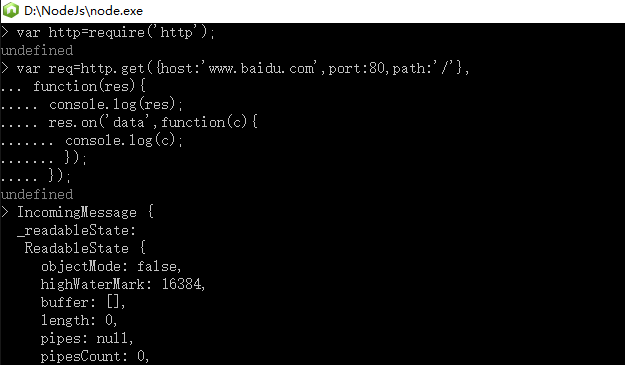
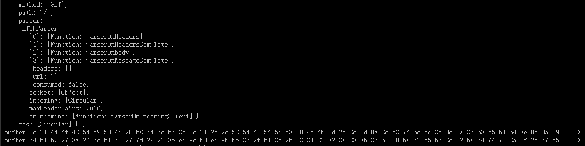
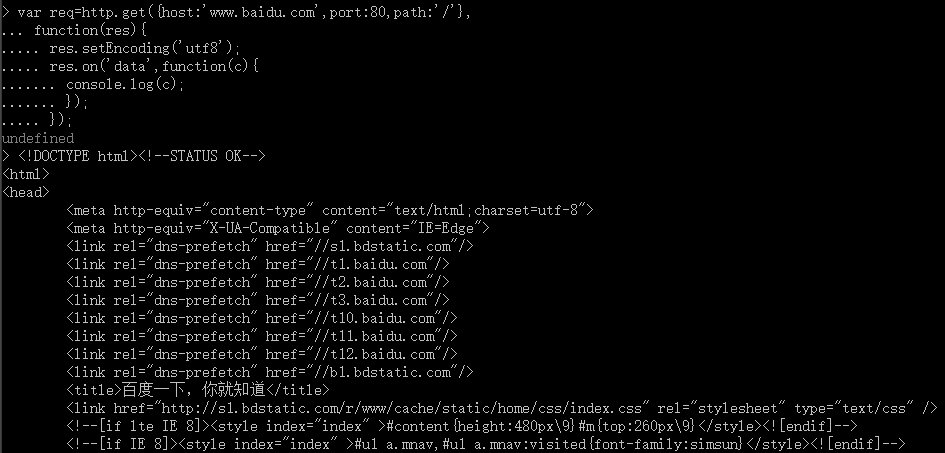

我们第一个要研究的 API 是 Events API。这是因为，尽管抽象，但它是其他所有 API 工作的基础模块。我们先看看 DOM 模型的 Events，然后 再与 Node 的实现方式进行比较。
如果你想向远程服务器发起 HTTP 连接，Node 也是很好的选择。Node 在许多情景 下都很适合使用，如使用 Web service，连接到文档数据库，或是抓取网页。你可以 使用同样的 http 模块来发起 HTTP 请求，但应该使用 http.ClientRequest 类。 该类有两个工厂方法：一个通用的方法和一个便捷的方法。
//创建HTTP请求的通用方法
var http=require('http');
var opts={
host:'www.baidu.com',
port:80,
path:'/',
method:'GET'
};
var req=http.request(opts,function(res){
console.log(res);
res.on('data',function(data){
console.log(data);
})
});
req.end();
你首先要查看的是配置（options）对象，它定义了请求的许多功能。我们必须 提供 host 名字（ IP 地址也可以）、端口（port) 和路径（path）。方法 （method）是可选项，如果没有指定，默认会设置为 GET。在本质上，这个例子指 定了往 http://www.baidu.com/ 的 80 端口发起 HTTP GET 请求。
接下来，我们要用配置对象来创建一个 http.ClientRequest 实例， 就是调用 http.request() 这个工厂方法，并传入 options 对象和回调函数（可选）。传入的回调函数会监听 response 事件，并在接收到 response 事件时，处理 response 的数据。HTTP 请求的正文内容实际上是通过 response 对象的数据流获得的。而且你可以监听 response 对象的 data 事件，以便于数据可用时就能处理。最后需要注意的一点是，需要结束（end()）该请求。因为这是一个 GET 请求， 所以我们并不会往服务器发送任何数据。但对于其他的 HTTP 方法，比如 PUT 或 POST，你可能需要发送数据。request 会等待 end() 方法调用后，才初始化 HTTP 请求，因为在那之前，它不确定我们是否还会发送数据。
GET请求GET 是很常见的 HTTP 使用方式，因此提供了一个专门的工厂方法来更方便地使用它。
var http=require('http');
var opts={
host:'www.baidu.com',
port:80,
path:'/'
};
var req=http.get(opts,function(res){
console.log(res);
res.on('data',function(data){
console.log(data);
})
});
http.get() 和之前的例子做了一样的事情,我们把 method 属性从配置对象中去掉了，还把 request.end() 也移除了，因为这些都已经隐含说明了。
如果运行了这两个例子，你得到的结果将是 Buffer 对象的裸数据。Buffer 是 Node 特殊定义的类，用来支持任意二进制数据的存储。
 虽然你也可以直接使用这些内容，但通常要指定编码方式，如 UTF-8（一种 Unicode 字符的编码格 式） ，这可以通过 response.setEncoding() 方法来指定.
在第一个例子中，我们没有调用 ClientResponse.setEncoding()，而且得到的 是 Buffer 中的块数据。虽然输出是简略的打印内容，但也能看出并非只有一个Buffer，而是分开了几个 Buffer 才把数据返回完整。在第二个例子中，因为我们设置了 res.setEncoding('utf8')，数据以 UTF-8 的格式返回了。 从服务器返 回的数据还是一样，分成了几块，但这次发给程序的是以正确的编码显示的字符串， 而不再是 Buffer 的裸数据,每个原始 Buffer 对应打印出来的都是一个字符串。
POST请求不是所有的 HTTP 请求都是用 GET 方法的，你还需要调用 POST、PUT 和其他 HTTP 方法，它们会改变对方的数据。这和发送 GET 请求的功能一样，只不过你还需要往 上发送一些数据。
//上传数据
var http=require('http');
var opts={
host:'www.baidu.com',
port:80,
path:'/submit',
method:'POST'
};
var req=http.request(opts,function(res){
res.setEncoding('utf8');
res.on('data',function(chunk){
console.log('Body : '+chunk);
})
});
req.write('my data');
req.write('more of my data');
req.end();
这个例子增加了 http.ClientRequest.write() 方 法。 可以用这个方法发送上行数据流。之前解释过，它要求你显式地调用 http. ClientRequest.end() 方法来表示数据发送完毕。每当调用 ClientRequest. write() 时，数据会马上上传（不会被缓存），但服务器在 ClientRequest.end() 调用之前是不会响应你的数据请求的。你可以把一个流（Stream）的 data 事件和 ClientRequest.write() 绑定在一起， 这样就能把数据以流的形式发送给服务器了。比如当需要把硬盘上的一个文件通过 HTTP 发送给远程服务器时。
ClientResponse 对象保存了关于请求的许多信息，包括 statusCode（包含了 HTTP 状态）和 header 属性（响应 头对象）。